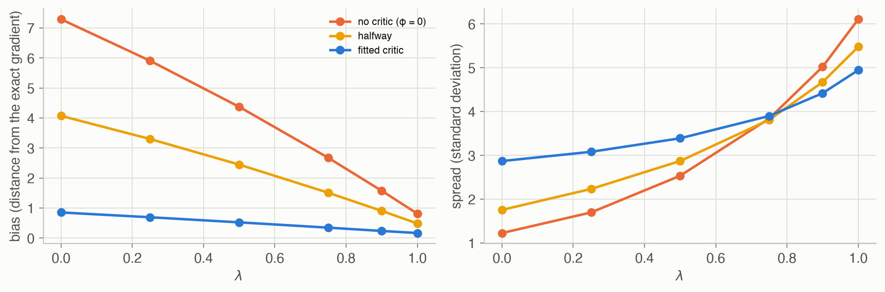
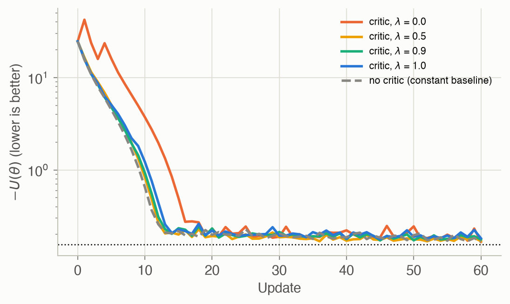
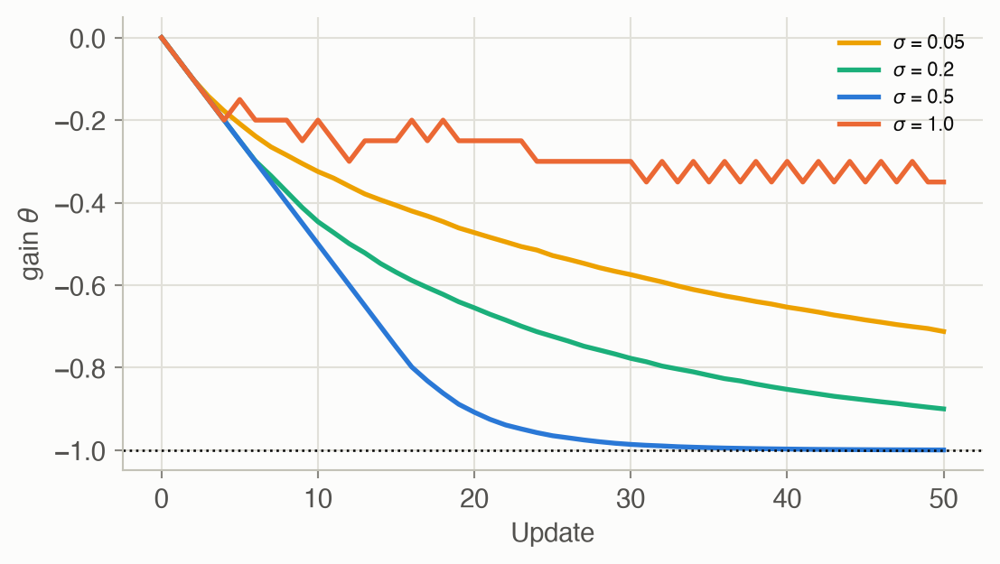

13 · Actor-Critic Methods
Part II — Sequential Problems
Big picture
Where this chapter fits
Chapters 10–12 improved a policy directly, and Chapter 11 showed that the noise in the gradient comes mostly from judging actions by noisy returns. The fix hinted at there was a baseline, and the best baseline is the value function, which is exactly what Chapters 7–9 computed. Actor-critic methods bring the two families together. The actor is a parameterized policy, improved by policy gradients. The critic is a parameterized value function, learned at the same time, that tells the actor how much better or worse than expected each action turned out. This is the design behind most modern deep reinforcement learning (A2C, PPO with a value head, DDPG, SAC) and behind AlphaGo Zero, which trained a policy and a value network from Monte Carlo tree search. The model-free versions of these ideas return in Chapter 17.
The question: how can a learned value function make policy gradients less noisy, and what does it cost?
The short answer: use the critic to estimate each action’s advantage from a few observed rewards plus the critic’s opinion of where you ended up. Leaning on the critic cuts variance but adds bias whenever the critic is wrong. Generalized advantage estimation chooses a point on that trade-off with one number, \(\lambda\). For continuous actions, the critic’s slope with respect to the action points the way to a better action, and that gives the deterministic policy gradient. A search procedure can also play the critic’s teacher: Monte Carlo tree search produces better action choices and values than the current networks, and the networks learn to imitate it.
The key ideas at a glance
Two learners. The actor \(\pi_\theta\) is improved by policy gradients, as in Chapter 11. The critic \(U_\phi\) is fitted by regression, as in Chapter 8, to the returns the actor actually earns. Each needs the other: the actor needs the critic’s advantages, and the critic needs the actor’s data.
Advantages from one step. The temporal difference (TD) residual \(\delta = r + \gamma U_\phi(s') - U_\phi(s)\) compares what happened in one step, plus the critic’s view of the next state, with the critic’s view of the current state. It estimates the advantage \(A(s, a)\) with far less noise than a whole trajectory’s return. But if the critic is wrong, it is biased.
Generalized advantage estimation (GAE). Look ahead \(k\) steps of real rewards before trusting the critic, and average over all \(k\) with weights \(\lambda^{k-1}\). \(\lambda = 0\) is the TD residual (low variance, biased by the critic). \(\lambda = 1\) is the Monte Carlo return minus the critic’s value (no critic bias, high variance). The best \(\lambda\) depends on how good the critic is.
Deterministic policy gradient. For a deterministic policy with continuous actions, learn an action-value critic \(Q_\phi(s, a)\) and move the policy’s action in the direction that raises \(Q_\phi\), the slope \(\partial Q/\partial a\). Exploration must be added separately, for example with noise on the actions.
Tree search as the teacher. Run Monte Carlo tree search (Chapter 9), guided by the current policy (which actions to try) and critic (how good a new leaf is). The search’s visit counts are a better policy than the actor, and its action values a better value than the critic. Train both to match the search. This is the AlphaGo Zero idea.
Vocabulary
| Term | Plain meaning |
|---|---|
| Actor \(\pi_\theta\) | The policy being improved |
| Critic \(U_\phi(s)\), \(Q_\phi(s, a)\) | A learned value function that judges the actor’s actions |
| TD residual \(\delta\) | \(r + \gamma U(s') - U(s)\): one step of reality versus the critic’s expectation |
| \(k\)-step advantage \(\hat A^{(k)}\) | \(k\) real rewards, then the critic’s value, minus the critic’s value now |
| Generalized advantage estimation (GAE) | An exponentially weighted average of \(k\)-step advantages, with weight \(\lambda\) |
| Deterministic policy gradient (DPG) | Follow the critic’s slope in the action through the policy’s Jacobian |
| Exploration noise \(\sigma\) | Random noise added to a deterministic policy’s actions |
| Guided tree search | MCTS using the policy as a prior and the critic to value leaves |
| \(\pi_{\text{MCTS}}\), \(U_{\text{MCTS}}\) | Policy and value read off a finished search: visit shares, best action value |
After this chapter you can
- Compute TD residuals and generalized advantages from a trajectory and a critic.
- Explain the bias–variance trade-off controlled by \(\lambda\), and how critic quality moves the best \(\lambda\).
- Write the actor and critic updates, and diagnose an unstable critic.
- Derive the deterministic policy gradient for a given policy and critic.
- Describe how tree search can train a policy and a value function, as in AlphaGo Zero.
Intuition
TipAnalogy
A student (the actor) and a tutor (the critic) are learning together. After each practice problem, the tutor predicted how well the student would do, and the student then did better or worse.
- Better than predicted: “whatever you did there, do more of it.” That surprise is the advantage.
- The tutor improves too, by comparing predictions with actual scores.
- A tutor who is still learning gives biased feedback. So early on, the student should wait for the final result (Monte Carlo). Later, the tutor’s quick verdict after each step (the TD residual) is both faster and steadier.
- \(\lambda\) sets how long the student waits before trusting the tutor.
We use the simple regulator again: keep \(s\) near 0, with the stochastic policy \(a \sim \mathcal{N}(\theta_1 s, \theta_2^2)\). The critic is \(U_\phi(s) = \phi_1 + \phi_2 s^2\): a constant plus a bowl, the natural shape for “how far from 0 are you”. At \(\theta = (-0.5, 0.5)\), a least-squares fit to many rollouts gives \(\phi \approx\) (-1.05, -1.13).
One step of reality, then trust the critic
A trajectory’s return is noisy because it adds up ten random steps. The TD residual adds up only one, the reward just received, and asks the critic about the rest. With the fitted critic and 10 rollouts, the gradient estimate built from TD residuals (\(\lambda = 0\)) has a spread of 2.9, against 4.9 using the full returns (\(\lambda = 1\)). See Equation 1.
When the critic is wrong
A critic that knows nothing (\(\phi = 0\), “every state is worth 0”) makes the TD residual just the immediate reward. That’s badly biased: the gradient estimate misses the truth by 7.3 on average, even with infinite data. With \(\lambda = 1\) the critic cancels out almost entirely, and the bias drops to 0.81, at the price of more noise. With this poor critic, the best compromise is \(\lambda =\) 0.75. With the fitted critic, it’s \(\lambda =\) 0.0 (Figure 4). See Equation 4.
Nudge the action uphill
A deterministic policy picks one action per state, so there’s no probability to push up or down. Instead, ask the critic: at this state, would a slightly larger action be better? If \(Q_\phi(s, a)\) increases with \(a\), move the policy so it outputs a larger action there. See Equation 5.
Learn from a better player
Tree search, guided by the current policy and critic, plays better than either one alone. It explores and looks ahead. So use it as a teacher: make the policy imitate the search’s choices and the critic match the search’s values. The next search starts from a better policy and critic and plays better still. On Hex World, starting from a uniformly random policy, this loop learns the optimal action on most tiles within a few dozen rounds (Figure 7). See Equation 7.
Formalism
Actor-critic
The actor follows the advantage form of the policy gradient (Chapter 11), with the advantage estimated from the critic by the TD residual (ADM §13.1):
\[ \delta_k = r_k + \gamma\, U_\phi(s_{k+1}) - U_\phi(s_k), \qquad \nabla U(\theta) \approx \mathbb{E}_\tau\left[\sum_{k} \nabla_\theta \log \pi_\theta(a_k \mid s_k)\, \gamma^{k-1} \delta_k\right] \tag{1}\]
In words. Judge each action by one step of what actually happened (the reward, plus the critic’s value of where you landed), compared with what the critic expected beforehand.
Term by term.
- If \(U_\phi\) equals the true value \(U^{\pi_\theta}\), then \(\mathbb{E}[\delta_k \mid s_k, a_k] = Q(s_k, a_k) - U(s_k) = A(s_k, a_k)\) exactly.
- Otherwise \(\delta_k\) is a biased estimate of the advantage, with much less variance than the return, because it involves only one random reward.
The critic is trained to predict returns:
\[ \ell(\phi) = \tfrac12\, \mathbb{E}_s\Big[\big(U_\phi(s) - U^{\pi_\theta}(s)\big)^2\Big], \qquad \nabla \ell(\phi) \approx \mathbb{E}_\tau\left[\sum_k \big(U_\phi(s_k) - r_{\text{to-go}}^{(k)}\big)\, \nabla_\phi U_\phi(s_k)\right] \tag{2}\]
In words. Pull the critic’s predictions toward the rewards-to-go that were actually observed.
Term by term. The unknown \(U^{\pi_\theta}(s_k)\) is replaced by its sample, the reward-to-go. For a linear critic, \(\nabla_\phi U_\phi(s)\) is the feature vector. The actor steps along its gradient and the critic against its own. Because each chases the other, step sizes matter. A common trick is to update the policy more often than the critic.
Generalized advantage estimation
Between one step and the whole trajectory lie \(k\)-step estimates (ADM §13.2; J. Schulman et al., ICLR, 2016):
\[ \hat A^{(k)}(s, a) = \sum_{\ell=1}^{k} \gamma^{\ell-1} r_\ell + \gamma^k U_\phi(s_{k+1}) - U_\phi(s) = \sum_{\ell=1}^{k} \gamma^{\ell-1} \delta_\ell \tag{3}\]
In words. Use \(k\) real rewards, then the critic’s opinion of where you are after \(k\) steps.
Term by term. The two forms are equal because the critic’s intermediate values cancel in the sum (it telescopes). Larger \(k\) means less reliance on the critic (less bias) and more random rewards (more variance).
\[ \hat A^{\text{GAE}}(s, a) = (1 - \lambda)\big(\hat A^{(1)} + \lambda \hat A^{(2)} + \lambda^2 \hat A^{(3)} + \cdots\big) = \sum_{k=1}^{\infty} (\gamma\lambda)^{k-1}\, \delta_k \tag{4}\]
In words. Average all the \(k\)-step estimates, with geometrically decreasing weights. That turns out to equal a discounted sum of TD residuals with discount \(\gamma\lambda\).
Term by term.
- \(\lambda = 0\) gives \(\delta_1\), the TD residual.
- \(\lambda = 1\) gives \(\sum_k \gamma^{k-1} r_k - U_\phi(s)\): the Monte Carlo return with the critic as a baseline.
- With a finite horizon, the sum stops at the last step. It’s computed with a backward sweep, \(\hat A_k = \delta_k + \gamma\lambda \hat A_{k+1}\).
Why it holds. Substitute Equation 3 into the weighted average. The residual \(\delta_k\) appears in every \(\hat A^{(j)}\) with \(j \ge k\), with total weight \((1-\lambda)\gamma^{k-1}(\lambda^{k-1} + \lambda^k + \cdots) = (\gamma\lambda)^{k-1}\).
Deterministic policy gradient
For a deterministic policy \(a = \pi_\theta(s)\) with continuous actions and a critic \(Q_\phi(s, a)\) (ADM §13.3; D. Silver et al., ICML, 2014):
\[ \nabla U(\theta) = \mathbb{E}_{s}\Big[\nabla_\theta \pi_\theta(s)\ \nabla_a Q_\phi(s, a)\big|_{a = \pi_\theta(s)}\Big] \tag{5}\]
In words. At each visited state, find which way to change the action to raise \(Q\), and change the parameters so the policy’s action moves that way.
Term by term.
- \(\nabla_\theta \pi_\theta(s)\) is the policy’s Jacobian: how each parameter moves each action component.
- \(\nabla_a Q_\phi\) is the critic’s slope in the action.
- The critic is trained on the squared TD residual \(\tfrac12\big(r + \gamma Q_\phi(s', \pi_\theta(s')) - Q_\phi(s, a)\big)^2\).
- Data comes from the policy plus exploration noise \(\mathcal{N}(0, \sigma^2)\), since a deterministic policy never tries anything else. Replay buffers and target networks (Chapter 17) stabilize it in practice.
Why it holds. \(U(\theta) = \mathbb{E}_s[Q(s, \pi_\theta(s))]\) with the state distribution held fixed. Differentiating through the action by the chain rule gives the product of the Jacobian and the action gradient.
Actor-critic with Monte Carlo tree search
Guide the tree search with the current policy as a prior and the critic as the leaf evaluation (ADM §13.4; D. Silver et al., Nature, 2017). Inside the tree, choose
\[ a = \mathop{\mathrm{arg\,max}}_a\ Q(s, a) + c\, \pi_\theta(a \mid s)\, \frac{\sqrt{N(s)}}{1 + N(s, a)} \tag{6}\]
In words. Like UCB1 (Chapter 9), but the exploration bonus is shared out in proportion to the policy’s own preferences, so promising actions are tried first.
Term by term. \(N(s, a)\) and \(Q(s, a)\) are the search’s visit counts and value estimates, and \(N(s) = \sum_a N(s, a)\). There’s no logarithm, and the 1 in the denominator follows AlphaGo Zero. After the search, the targets are:
\[ \pi_{\text{MCTS}}(a \mid s) \propto N(s, a)^\eta, \qquad U_{\text{MCTS}}(s) = \max_a Q(s, a), \qquad \ell(\theta) = -\sum_a \pi_{\text{MCTS}}(a \mid s) \log \pi_\theta(a \mid s) \tag{7}\]
In words. The policy should imitate how often the search chose each action (cross entropy), and the critic should match the search’s best value.
Term by term.
- \(\eta\) sharpens (\(\eta > 1\)) or flattens the visit distribution.
- For a softmax policy with one logit per action, \(\nabla_{\text{logits}}\,\ell = \pi_\theta - \pi_{\text{MCTS}}\), so each step moves the policy’s probabilities toward the search’s.
- On this page, only the search’s root is trained, the state it spent all its simulations on, as AlphaGo Zero does. The book trains on every state the search visited. Here those deeper, rarely visited states gave noisy targets that stalled learning.
Worked example
TD residuals and GAE by hand
A 4-step episode with \(\gamma = 0.9\). The critic’s values at the visited states are \(U = (-2, -1.5, -1, -0.5)\), and the rewards are \(r = (-0.5, -0.3, -0.4, -0.2)\). The TD residuals exist for the first three steps:
| step \(k\) | \(r_k\) | \(U(s_k)\) | \(U(s_{k+1})\) | \(\delta_k = r_k + 0.9\,U(s_{k+1}) - U(s_k)\) |
|---|---|---|---|---|
| 1 | −0.5 | −2 | −1.5 | \(-0.5 - 1.35 + 2 = 0.15\) |
| 2 | −0.3 | −1.5 | −1 | \(-0.3 - 0.9 + 1.5 = 0.30\) |
| 3 | −0.4 | −1 | −0.5 | \(-0.4 - 0.45 + 1 = 0.15\) |
With \(\lambda = 0.5\), so \(\gamma\lambda = 0.45\), the backward sweep gives:
- \(\hat A_3 = 0.15\);
- \(\hat A_2 = 0.30 + 0.45 \times 0.15 = 0.3675\);
- \(\hat A_1 = 0.15 + 0.45 \times 0.3675 = 0.3154\).
With \(\lambda = 0\), the advantages are just the \(\delta\)s. All are positive: each step went slightly better than the critic predicted.
The deterministic policy gradient by hand
Policy \(a = \theta s\) with critic \(Q_\phi(s, a) = \phi_1 + \phi_2 s^2 + \phi_3 (s + a)^2\). Then \(\nabla_\theta \pi = s\) and \(\partial Q/\partial a = 2\phi_3(s + a)\). At \(\theta = 0\) with \(\phi_3 = -1\), a state \(s = 0.5\) contributes \(0.5 \times 2(-1)(0.5 + 0) = -0.5\): make \(\theta\) more negative, so the policy pushes back against \(s\). A state \(s = -0.2\) contributes \((-0.2) \times 2(-1)(-0.2) = -0.08\), the same direction. The critic says the next state \(s + a\) should be near 0, and the policy learns to cancel \(s\).
Interactive
Choose λ for your critic
Pick the critic’s quality (from knowing nothing, \(\phi = 0\), to the least-squares fit) and \(\lambda\). Each dot is one gradient estimate from 10 rollouts, 300 in all. The star is the exact gradient. A poor critic with small \(\lambda\) gives tight but off-center clouds (bias); \(\lambda = 1\) gives centered but wide ones (variance).
Watch tree search teach the actor and critic
Scrub through the rounds of tree-search actor-critic on Hex World. In each round, a 100-simulation search runs from every tile, guided by the current policy and critic, and each tile’s policy and value move toward the search’s. Tiles are colored by the critic’s value. Arrows show each tile’s most likely action: black if it’s the optimal action, orange if not.
Algorithms & code
Advantages from the critic
def td_residuals(values: Array, R: Array, gamma: float) -> Array:
"""delta_k = r_k + gamma U(s_(k+1)) - U(s_k) for steps 1..d-1, given
the critic's values U(s_k) at every visited state (shape (m, d)).
The last step has no next state in the data, so it is dropped."""
return R[:, :-1] + gamma * values[:, 1:] - values[:, :-1]
def generalized_advantages(delta: Array, gamma: float,
lam: float) -> Array:
"""A_k = sum over l >= 0 of (gamma lam)^l delta_(k+l), computed by a
backward sweep. lam = 0 gives the TD residual; lam = 1 the discounted
reward-to-go minus the critic's value (Monte Carlo)."""
adv = np.zeros_like(delta)
running = np.zeros(delta.shape[0])
for k in range(delta.shape[1] - 1, -1, -1):
running = delta[:, k] + gamma * lam * running
adv[:, k] = running
return adv
def actor_gradient(scores: Array, adv: Array, gamma: float) -> Array:
"""Policy gradient sum_k grad log pi_k gamma^(k-1) A_k, averaged over
trajectories. scores has shape (m, d', n) and adv (m, d')."""
discount = gamma ** np.arange(adv.shape[1])
return (scores * (discount * adv)[..., None]).sum(axis=1).mean(axis=0)
def critic_gradient(values: Array, features: Array, R: Array,
gamma: float) -> Array:
"""Gradient of (1/2) sum_k (U(s_k) - rtg_k)^2, averaged over
trajectories: pull the critic toward the observed reward-to-go.
features has shape (m, d, p): the gradient of U with respect to phi."""
err = values - rewards_to_go(R, gamma) # (m, d)
return (err[..., None] * features).sum(axis=1).mean(axis=0)
def actor_critic_step(theta, phi, S, A, R, gamma, grad_logp, features,
lam: float, alpha_theta: float, alpha_phi: float):
"""One update of both: ascend the actor's policy gradient (with
generalized advantages from the critic), scaled to length at most 1
as in Chapter 12, and descend the critic's squared error. Returns the
new (theta, phi)."""
feats = features(S) # (m, d, p)
values = feats @ phi # U_phi at every state
adv = generalized_advantages(td_residuals(values, R, gamma), gamma,
lam)
scores = grad_logp(theta, S[:, :-1], A[:, :-1])
grad = scale_gradient(actor_gradient(scores, adv, gamma), 1.0)
theta = theta + alpha_theta * grad
phi = phi - alpha_phi * critic_gradient(values, feats, R, gamma)
return theta, phiusing ADM, LinearAlgebra, Random, Statistics
γ = REGULATOR_γ
# δ_k = r_k + γ U(s_{k+1}) - U(s_k) for steps 1..d-1; `values` holds U at every visited state.
td_residuals(values, R) = R[:, 1:end-1] .+ γ .* values[:, 2:end] .- values[:, 1:end-1]
# GAE by a backward sweep: A_k = δ_k + γλ A_{k+1}.
function generalized_advantages(δ, λ)
A, running = zero(δ), zeros(size(δ, 1))
for k in size(δ, 2):-1:1
running = δ[:, k] .+ γ * λ .* running
A[:, k] = running
end
return A
end
# The worked example: U = (-2, -1.5, -1, -0.5), r = (-0.5, -0.3, -0.4, -0.2).
δ = td_residuals([-2.0 -1.5 -1.0 -0.5], [-0.5 -0.3 -0.4 -0.2])
@assert δ ≈ [0.15 0.30 0.15]
@assert generalized_advantages(δ, 0.5) ≈ [0.15 + 0.45 * 0.3675 0.3675 0.15]Deterministic policy gradient
def deterministic_policy_gradients(theta, phi, S, A, R, gamma, policy,
dpolicy, q_features, dq_da):
"""Deterministic policy gradient with a critic Q_phi(s, a) =
phi . q_features(s, a). The actor ascends
sum_k gamma^(k-1) (d pi / d theta)(s_k) (dQ/da)(s_k, pi(s_k)),
and the critic descends the squared TD residual
delta = r + gamma Q(s', pi(s')) - Q(s, a).
Returns (actor gradient, critic gradient)."""
discount = gamma ** np.arange(S.shape[1])
pi_s = policy(theta, S)
actor = (discount[None, :, None] * dpolicy(theta, S)
* dq_da(phi, S, pi_s)[..., None]).sum(axis=1).mean(axis=0)
f_sa = q_features(S[:, :-1], A[:, :-1]) # Q at taken actions
s2 = S[:, 1:]
f_next = q_features(s2, policy(theta, s2)) # Q at the next state
delta = R[:, :-1] + gamma * f_next @ phi - f_sa @ phi
critic = (delta[..., None] * (gamma * f_next - f_sa)).sum(axis=1)
return actor, critic.mean(axis=0)# Regulator: policy a = θ s, critic Q(s, a) = φ₁ + φ₂ s² + φ₃ (s + a)².
q_features(s, a) = [1.0, s^2, (s + a)^2]
dq_da(φ, s, a) = 2φ[3] * (s + a)
# Actor: Σ_k γ^(k-1) s_k ∂Q/∂a(s_k, θ s_k). Critic: TD residual times the gradient of the residual.
function dpg_gradients(θ, φ, S, A, R)
m, d = size(S)
actor = sum(γ^(k - 1) * S[i, k] * dq_da(φ, S[i, k], θ * S[i, k]) for i in 1:m, k in 1:d) / m
critic = zeros(3)
for i in 1:m, k in 1:d-1
f, f′ = q_features(S[i, k], A[i, k]), q_features(S[i, k+1], θ * S[i, k+1])
δ = R[i, k] + γ * (f′ ⋅ φ) - f ⋅ φ
critic .+= δ .* (γ .* f′ .- f) ./ m
end
return actor, critic
end
function sample(θ, σ, m, rng) # the gain policy plus N(0, σ²) exploration
S, A, R = zeros(m, 10), zeros(m, 10), zeros(m, 10)
for i in 1:m
s = REGULATOR_START[1] + REGULATOR_START[2] * randn(rng)
for k in 1:10
a = θ * s + σ * randn(rng)
S[i, k], A[i, k] = s, a
s, R[i, k] = regulator_step(s, a, rng)
end
end
return S, A, R
end
rng, θ, φ = MersenneTwister(4), 0.0, [0.0, -1.0, -1.0]
for _ in 1:50
S, A, R = sample(θ, 0.5, 5, rng)
ga, gc = dpg_gradients(θ, φ, S, A, R)
global θ += 0.05 * ga / max(1, abs(ga)) # capped actor step
global φ -= 0.05 .* gc
end
@assert isapprox(θ, -1.0; atol = 0.15)Tree search as the teacher
def softmax(logits: Array) -> Array:
z = np.exp(logits - logits.max(axis=-1, keepdims=True))
return z / z.sum(axis=-1, keepdims=True)
class GuidedTreeSearch:
"""Monte Carlo tree search guided by a policy prior and a value
estimate (as in AlphaGo Zero): actions are chosen by
Q(s, a) + c pi(a | s) sqrt(N(s)) / (1 + N(s, a)),
and new leaves are valued by the critic instead of a rollout."""
def __init__(self, mdp, prior: Array, values: Array, d: int, c: float,
rng):
self.mdp, self.prior, self.values = mdp, prior, values
self.d, self.c, self.rng = d, c, rng
self.N, self.Q = {}, {}
def simulate(self, s: int, d: int) -> float:
if d <= 0:
return self.values[s]
if s not in self.N: # new leaf: the critic values it
n_actions = self.mdp.T.shape[1]
self.N[s], self.Q[s] = np.zeros(n_actions), np.zeros(n_actions)
return self.values[s]
N, Q = self.N[s], self.Q[s]
score = Q + self.c * self.prior[s] * np.sqrt(N.sum()) / (1 + N)
a = int(np.argmax(score))
s2, r = sample_step(self.mdp, s, a, self.rng)
q = r + self.mdp.gamma * self.simulate(s2, d - 1)
N[a] += 1
Q[a] += (q - Q[a]) / N[a]
return q
def root_targets(tree: GuidedTreeSearch, s: int, eta: float = 1.0):
"""Training targets from a finished search at its root s:
pi_MCTS(a | s) proportional to N(s, a)^eta, and U_MCTS(s) = the
largest Q(s, a) among the actions tried."""
N = tree.N[s]
weights = N**eta
return weights / weights.sum(), tree.Q[s][N > 0].max()
def tree_search_actor_critic_step(mdp, logits: Array, values: Array,
starts, m: int, d: int, c: float,
alpha_theta: float, alpha_phi: float,
rng, eta: float = 1.0):
"""One round: search from each start state, then move the policy at
that state toward the search's visit distribution (for softmax logits
the cross-entropy gradient is pi_theta - pi_MCTS) and its value toward
U_MCTS. Tabular: one logit per (state, action), one value per state.
Only the roots are trained, where the search statistics are richest
(as in AlphaGo Zero)."""
logits, values = logits.copy(), values.copy()
for s0 in starts:
tree = GuidedTreeSearch(mdp, softmax(logits), values, d, c, rng)
for _ in range(m):
tree.simulate(s0, d)
pi_target, u_target = root_targets(tree, s0, eta)
logits[s0] -= alpha_theta * (softmax(logits[s0]) - pi_target)
values[s0] -= alpha_phi * (values[s0] - u_target)
return logits, valuessoftmax(x) = (z = exp.(x .- maximum(x)); z ./ sum(z))
hw = hex_world()
nS, nA = size(hw.R)
sample_next(s, a, rng) = findfirst(cumsum(hw.T[s, a, :]) .>= rand(rng))
# One search from s0: PUCT with prior π(·|s) and leaf values U; returns the root's N and Q.
function guided_search(s0, logits, U, m, d, c, rng)
N, Q = Dict{Int, Vector{Float64}}(), Dict{Int, Vector{Float64}}()
function simulate(s, depth)
depth <= 0 && return U[s]
if !haskey(N, s) # new leaf: the critic values it
N[s], Q[s] = zeros(nA), zeros(nA)
return U[s]
end
prior = softmax(logits[s, :])
a = argmax(Q[s] .+ c .* prior .* sqrt(sum(N[s])) ./ (1 .+ N[s]))
q = hw.R[s, a] + hw.γ * simulate(sample_next(s, a, rng), depth - 1)
N[s][a] += 1
Q[s][a] += (q - Q[s][a]) / N[s][a]
return q
end
for _ in 1:m
simulate(s0, d)
end
return N[s0], Q[s0]
end
# Rounds of: search from every decision tile, then move its logits and value toward the search.
decisions = [i for (i, t) in enumerate(ADM.HEX_STANDARD_TILES) if !haskey(ADM.HEX_STANDARD_REWARDS, t)]
rng = MersenneTwister(0)
logits, U = zeros(nS, nA), zeros(nS)
for _ in 1:30, s in decisions
Ns, Qs = guided_search(s, logits, U, 100, 10, 5.0, rng)
logits[s, :] .-= 1.0 .* (softmax(logits[s, :]) .- Ns ./ sum(Ns)) # cross-entropy gradient
U[s] -= 0.5 * (U[s] - maximum(Qs[Ns .> 0]))
end
# Compare with the optimal policy (value iteration).
function optimal_policy()
V = zeros(nS)
for _ in 1:500
V = [maximum(hw.R[s, a] + hw.γ * (hw.T[s, a, :] ⋅ V) for a in 1:nA) for s in 1:nS]
end
return [argmax([hw.R[s, a] + hw.γ * (hw.T[s, a, :] ⋅ V) for a in 1:nA]) for s in 1:nS]
end
@assert mean(argmax(logits[s, :]) == optimal_policy()[s] for s in decisions) >= 0.75
NoteReading the Julia code (for Python programmers)
global θ += ...is needed inside a top-level loop to update a variable defined outside it. Julia’s scoping rule differs from Python’s here.function simulate(...)insideguided_searchis a closure: it sees and changesNandQ, like a nesteddefwithnonlocal.R[:, 1:end-1]is all rows, every column but the last, likeR[:, :-1].for _ in 1:30, s in decisionsis a nested loop in one line.Ns ./ sum(Ns)normalizes the visit counts elementwise (the.means “for each element”).
Run them
rng = np.random.default_rng(3)
theta, phi = np.array([0.0, 1.0]), np.zeros(2)
for _ in range(60): # 60 actor-critic updates, lambda = 0.5
S, A, R = sr.sample_trajectories(theta, 10, rng)
theta, phi = actor_critic_step(theta, phi, S, A, R, G, sr.grad_log_policy,
features, lam=0.5, alpha_theta=0.1, alpha_phi=0.002)actor theta = (-0.894, -0.024), exact value -0.160 (optimum -0.155); critic phi = (-0.47, -1.58)Results
The bias–variance trade-off of λ

The error that matters combines both, the root-mean-square error. It is smallest at \(\lambda =\) 0.75 without a critic, 0.5 with the halfway critic, and 0.0 with the fitted one.
Learning actor and critic together

After 60 updates, the share of runs within 0.05 of the optimum is 65% for λ = 0.0, 80% for λ = 0.5, 85% for λ = 0.9, 80% for λ = 1.0, and 85% without a critic. With only 10 steps per episode, returns aren’t very noisy, so the critic’s advantage is small here. It grows with the horizon, because the variance of a return adds up over every step. The critic’s step size matters as much as \(\lambda\). With a critic step of 0.02 instead of 0.002, 100% of runs end more than 1 below the optimum. Early states are large (the initial policy lets \(s\) grow), so the squared-state feature makes the critic’s gradient huge, and the critic’s values blow up and drag the actor with them.
Exploration in the deterministic policy gradient

The median gain after 50 updates is -0.71 with σ = 0.05, -0.90 with σ = 0.2, -1.00 with σ = 0.5, -0.35 with σ = 1.0.
- Too little noise teaches the critic little about how \(Q\) depends on the action, so progress is slow.
- Too much noise pushes the state far from 0, where the quadratic critic’s TD updates become huge. The critic’s parameters blew up in 85% of the runs with \(\sigma = 1\), and the actor followed its wrong slopes.
Tree search as a teacher
![Three line charts with rounds 0 to 30 across. Left: the stochastic policy's value starts at about minus 3.5, the uniform random level, and rises steadily to about 4.3; the greedy version starts at about minus 5.7 (with all logits equal, every tile's favorite is the first action, east), jumps to about 3.2 after one round and reaches about 4.5, on the dotted optimum line. Middle: the share of optimal actions rises from about 0.33 to 0.8 within three rounds and to 0.95 by round 25. Right: the critic's average error falls from about 4.5 to about 0.3 by round 8 and about 0.2 by round 30.](ch13-actor-critic-methods_files/figure-html/fig-tree-search-output-1.png)
After 30 rounds, the greedy policy picks the optimal action on 20 of 21 tiles and averages 4.51, against the optimal 4.53. The critic’s values are off by 0.21 on average.
Solved problems
Problem 1: the TD residual of a perfect critic. Show that if \(U_\phi = U^\pi\), then \(\mathbb{E}[\delta \mid s, a] = A^\pi(s, a)\).
TipSolution
\(\mathbb{E}[\delta \mid s, a] = \mathbb{E}[r + \gamma U^\pi(s') \mid s, a] - U^\pi(s) = Q^\pi(s, a) - U^\pi(s) = A^\pi(s, a)\). The first expectation is the definition of \(Q^\pi\): the expected reward plus the discounted value of the next state. The estimate is exact on average, and its noise comes from one step only.
Problem 2: GAE’s two extremes. Write out \(\hat A^{\text{GAE}}\) for a 3-step episode with \(\lambda = 0\) and \(\lambda = 1\), in terms of rewards and critic values.
TipSolution
- \(\lambda = 0\): \(\hat A_1 = \delta_1 = r_1 + \gamma U(s_2) - U(s_1)\). Only the first reward is used.
- \(\lambda = 1\): \(\hat A_1 = \delta_1 + \gamma\delta_2 + \gamma^2\delta_3 = r_1 + \gamma r_2 + \gamma^2 r_3 + \gamma^3 U(s_4) - U(s_1)\). The intermediate critic values cancel.
So \(\lambda = 1\) uses the critic only as a baseline at the start and a bootstrap at the very end. If the episode ends at step 3, it uses the critic only as a baseline.
Problem 3: a Jacobian for the deterministic policy gradient. A policy outputs two actions, \(\pi_\theta(s) = (\theta_1 s,\ \theta_2 + \theta_3 s^2)\). Write \(\nabla_\theta \pi_\theta(s)\), and the actor’s gradient if \(\nabla_a Q = (g_1, g_2)\).
TipSolution
Column \(j\) is the gradient of action \(j\): \[\nabla_\theta \pi_\theta(s) = \begin{pmatrix} s & 0 \\ 0 & 1 \\ 0 & s^2 \end{pmatrix}.\] The actor’s gradient is \(\nabla_\theta\pi\,\nabla_a Q = (s g_1,\ g_2,\ s^2 g_2)\). \(\theta_1\) follows the first action’s slope; \(\theta_2\) and \(\theta_3\) follow the second’s.
Problem 4: cross entropy for a softmax policy. A tile’s policy is \(\pi_\theta = \operatorname{softmax}(z)\) over three actions with logits \(z = (0, 0, 0)\). The search visited the actions 6, 3 and 1 times. With step size 1, what are the new logits and probabilities?
TipSolution
\(\pi_\theta = (1/3, 1/3, 1/3)\) and \(\pi_{\text{MCTS}} = (0.6, 0.3, 0.1)\). The gradient of the cross entropy with respect to the logits is \(\pi_\theta - \pi_{\text{MCTS}} = (-0.267, 0.033, 0.233)\). Stepping against it, the new logits are \(z = (0.267, -0.033, -0.233)\), giving \(\operatorname{softmax}(z) \approx (0.42, 0.31, 0.26)\). That’s a step toward the search’s preferences.
Problem 5: which λ? Early in training the critic is poor; late in training it’s accurate. How should \(\lambda\) change, and why do practical systems often just fix \(\lambda \approx 0.95\)?
TipSolution
Early, a poor critic makes small \(\lambda\) badly biased (Figure 4), so a large \(\lambda\) is safer. Late, the critic’s bias is small, so a smaller \(\lambda\) cuts variance. A fixed \(\lambda \approx 0.95\) is a compromise that stays close to unbiased while still trimming the variance from rewards far in the future. Here the effective horizon is short (10 steps), so the benefit of small \(\lambda\) is modest. In long tasks, where \(\sum_k \gamma^k r_k\) is extremely noisy, it’s much larger.
Recap
- An actor-critic learns a policy and a value function together; the critic supplies advantages for the actor’s gradient (Equation 1, Equation 2). Why it matters: it’s how policy gradients become practical: lower variance, and learning from every step instead of waiting for whole episodes.
- GAE’s \(\lambda\) trades the critic’s bias against the returns’ variance (Equation 3, Equation 4). Why it matters: with no critic, \(\lambda = 0\) missed the gradient by 7.3; with a fitted critic, \(\lambda = 0\) gave the smallest error of all. The right \(\lambda\) depends on how good the critic is.
- Two coupled learners need compatible step sizes. Why it matters: a critic that steps too fast can blow up and take the actor with it. This is the root of many practical tricks, such as target networks and slower critic updates.
- The deterministic policy gradient follows the critic’s slope in the action (Equation 5). Why it matters: it handles continuous actions directly (DDPG, TD3), but it needs deliberate exploration noise, neither too little nor too much.
- Tree search can teach the actor and critic (Equation 6, Equation 7). Why it matters: planning improves on the networks, and the networks make the next planning cheaper. This loop took AlphaGo Zero from random play to superhuman Go.
Cheat sheet & connections
| Name | Formula | Ref |
|---|---|---|
| ★ TD residual | \(\delta_k = r_k + \gamma U_\phi(s_{k+1}) - U_\phi(s_k)\) | Equation 1 |
| Critic gradient | \(\sum_k (U_\phi(s_k) - r_{\text{to-go}}^{(k)}) \nabla_\phi U_\phi(s_k)\) | Equation 2 |
| \(k\)-step advantage | \(\sum_{\ell \le k} \gamma^{\ell-1} r_\ell + \gamma^k U(s_{k+1}) - U(s) = \sum_{\ell \le k}\gamma^{\ell-1}\delta_\ell\) | Equation 3 |
| ★ GAE | \(\sum_k (\gamma\lambda)^{k-1} \delta_k\) | Equation 4 |
| ★ Deterministic policy gradient | \(\mathbb{E}_s[\nabla_\theta\pi_\theta(s)\, \nabla_a Q_\phi(s, a)]\) | Equation 5 |
| PUCT | \(Q(s,a) + c\,\pi_\theta(a \mid s)\sqrt{N(s)}/(1 + N(s,a))\) | Equation 6 |
| Tree search targets | \(\pi_{\text{MCTS}} \propto N^\eta\), \(U_{\text{MCTS}} = \max_a Q\) | Equation 7 |
Common pitfalls
- Trusting a new critic. Small \(\lambda\) with an untrained critic gives confident but wrong advantages. Start with larger \(\lambda\), or pretrain the critic.
- Critic step sizes tuned for small states. Features such as \(s^2\) can be huge early on. Scale features, cap the critic’s step, or step the critic more slowly.
- No exploration with deterministic policies. Without action noise, the critic never learns \(\partial Q/\partial a\) away from the policy’s own actions.
- Training on thin search statistics. Search targets from rarely visited states are noisy. Train where the search spent its simulations (here, the root).
- Forgetting that the critic chases a moving target. As the actor changes, the true value changes. The critic always lags a little.
Connections
- Ch 11 · Policy Gradient Estimation: baselines and the advantage form, which the critic makes practical.
- Ch 12 · Policy Gradient Optimization: TRPO and PPO typically use GAE advantages.
- Ch 8 · Approximate Value Functions: the critic is a fitted value function.
- Ch 9 · Online Planning: Monte Carlo tree search, here guided by a learned policy and value.
- Ch 17 · Model-Free Methods: TD learning, replay buffers and target networks.
- Appendix D · Neural Representations: the networks usually used for actors and critics.